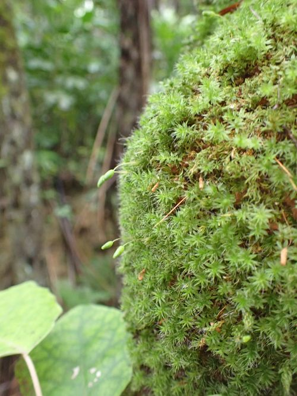

Leptostomataceae
(No widely accepted common name)
Leptostomataceae is a small family of mosses within the order Bryales. It is characterized by its distinctive, often large and pale leaves with hooded (cucullate) tips and inclined to pendulous capsules. The family is primarily found in temperate regions of the Southern Hemisphere.
Overview
The Leptostomataceae family comprises acrocarpous mosses (meaning the sporophytes terminate the main stems or branches) typically growing in tufts or cushions on soil, rock, or tree bark. Their most striking feature is often the large, concave leaves which are frequently hooded or cucullate at the apex, giving them a unique appearance. The family is relatively small, with the genus Leptostomum being the most representative and widespread.
These mosses are primarily distributed across temperate zones of the Southern Hemisphere, particularly in Australia, New Zealand, South America, and southern Africa. While not economically significant in the way many flowering plant families are, they play ecological roles in their habitats, contributing to soil formation, water retention, and providing microhabitats for invertebrates.
Quick Facts
- Scientific Name: Leptostomataceae
- Common Name: None widely accepted
- Number of Genera: Approximately 1-2 (primarily Leptostomum)
- Number of Species: Approximately 10-15
- Distribution: Primarily temperate Southern Hemisphere (Australia, New Zealand, S. America, S. Africa)
- Phylogenetic Position: Bryophyta (Mosses) - Bryopsida - Bryales
Key Characteristics
Growth Form and Habit
Plants are acrocarpous, growing upright in often dense tufts or cushions. Stems are erect, simple or sparsely branched, and typically possess a central strand. Rhizoids are usually present at the base of the stems.
Leaves (Gametophyte)
Leaves are relatively large, erect to spreading when moist, and often contorted or appressed when dry. They are typically ovate to lanceolate or oblong-lingulate, strongly concave, and characteristically cucullate (hooded) at the apex. The leaf margins are usually entire or finely serrulate near the apex. The costa (midrib) is single and strong, ending below the apex. Laminal cells (leaf cells) are large, smooth, thin-walled, and typically hexagonal or rhomboidal in the upper part of the leaf, becoming more rectangular towards the base.
Sporophyte Characteristics
The reproductive structures (sporophytes) are borne at the tips of stems or branches. Key features include:
- Seta: Long, smooth, and typically yellowish to reddish-brown, holding the capsule well above the leafy plant.
- Capsule: Inclined to pendulous (cernuous or drooping), typically ovoid or pyriform (pear-shaped), often symmetric. The capsule wall (exothecium) has cells that may be collenchymatous (thickened at corners). Stomata are usually present at the base of the capsule (neck).
- Peristome: Double (diplolepidous). The outer peristome consists of 16 teeth, often pale yellow or hyaline. The inner peristome has a high basal membrane, well-developed segments, and often cilia. The peristome regulates spore release.
- Operculum: The lid covering the capsule mouth is typically conic to rostrate (beaked).
- Calyptra: The protective cap covering the developing capsule is large, smooth, cucullate (hood-shaped), and falls off as the capsule matures.
Spores and Dispersal
The fruit (capsule) contains numerous small spores, typically spherical and finely papillose. Spore dispersal is primarily by wind, aided by the hygroscopic movements of the peristome teeth, which open and close in response to humidity changes, releasing spores during dry conditions.
Chemical Characteristics
Like other mosses, Leptostomataceae produce various secondary metabolites typical of bryophytes, including phenolic compounds and terpenoids, which may play roles in defense against UV radiation, desiccation, and herbivory. However, the family is not particularly noted for unique or economically important chemical constituents compared to some other plant groups.
Field Identification
Identifying members of the Leptostomataceae family in the field relies on recognizing their distinct gametophyte and sporophyte features, particularly the unique leaf shape:
Primary Identification Features
- Cucullate Leaf Apex: The most distinctive feature is the hooded tip of the relatively large, concave leaves. This gives the plants a characteristic appearance, especially noticeable with a hand lens.
- Acrocarpous Growth Habit: Plants grow upright in tufts or cushions, with sporophytes terminating the stems.
- Large Upper Laminal Cells: The cells in the upper part of the leaf are typically large, clear, and somewhat inflated-looking compared to many other mosses.
- Inclined to Pendulous Capsules: When present, the capsules are usually held on long setae and droop noticeably.
Secondary Identification Features
- Habitat: Often found on soil banks, rocks (especially shaded crevices), or tree bases and logs in temperate forests.
- Leaf Texture/Appearance: Leaves can appear somewhat pale or whitish, especially when dry, due to the large cells. They often look contorted when dry.
- Costa: A single, strong midrib that clearly stops short of the leaf tip.
- Calyptra: If young sporophytes are present, look for the large, smooth, hood-shaped calyptra covering the capsule.
Common Confusion Points
Leptostomataceae might be confused with other acrocarpous mosses, especially members of the Bryaceae or Mniaceae, which can have large leaves and sometimes inclined capsules. However:
- Bryaceae: Generally lack the strongly cucullate leaf apex seen in Leptostomataceae. Leaf cells may differ in shape and arrangement.
- Mniaceae: Often have leaves bordered by distinct elongated cells and may have teeth along the margin, features typically less pronounced or absent in Leptostomataceae. Their leaf shape is usually not distinctly cucullate.
- Careful examination of the leaf apex shape and the size/shape of the upper laminal cells is crucial for distinguishing Leptostomataceae.
Field Guide Quick Reference
Look For:
- Upright (acrocarpous) growth in tufts
- Large, concave leaves
- Strongly hooded (cucullate) leaf tips (Key feature)
- Costa ending below apex
- Large, clear upper leaf cells
- Long seta with inclined/pendulous capsule (if present)
Key Variations:
- Leaf size and degree of cucullation can vary between species.
- Plant color can range from green to yellowish or whitish-green.
- Capsule shape (ovoid to pyriform).
- Habitat preference (soil, rock, bark).
Notable Examples
The family is dominated by the genus Leptostomum. Here are a couple of representative species:

Leptostomum inclinans
(Inclined Pincushion Moss - sometimes used)
A common and widespread species within the family's range, often forming dense, bright green to yellowish cushions. Characterized by its clearly cucullate leaf apices and inclined to horizontal capsules on long setae. Frequently found on tree ferns, logs, and soil in moist forests.

Leptostomum macrocarpum
(Large-fruited Leptostomum - descriptive)
As the name suggests, this species often has relatively large capsules compared to L. inclinans. It shares the characteristic cucullate leaves and acrocarpous habit. Found in similar habitats, often on bark or rock in temperate rainforests of the Southern Hemisphere.
Phylogeny and Classification
Leptostomataceae belongs to the division Bryophyta (mosses), class Bryopsida, and order Bryales. The Bryales is a large and diverse order of "true mosses." Molecular phylogenetic studies place Leptostomataceae firmly within this order, often showing relationships with families like Bryaceae and Mniaceae, though its exact sister group relationship can vary depending on the study and markers used.
The family represents a lineage of acrocarpous mosses that likely diversified in the cool temperate regions of the ancient supercontinent Gondwana, explaining its current predominantly Southern Hemisphere distribution. The distinctive cucullate leaf morphology is a key synapomorphy for the group.
Position in Plant Phylogeny
- Kingdom: Plantae
- Division: Bryophyta (Mosses)
- Class: Bryopsida
- Order: Bryales
- Family: Leptostomataceae
Evolutionary Significance
The Leptostomataceae family showcases adaptations typical of many mosses thriving in moist, temperate environments. Key evolutionary aspects include:
- Acrocarpous Habit: An efficient growth form for competing for light in certain habitats and positioning sporophytes for effective spore dispersal.
- Cucullate Leaf Apex: This specialized leaf shape may play a role in water management (trapping moisture or aiding runoff) or protecting the apical meristem.
- Double Peristome: A complex structure representing an advanced mechanism for regulating spore release in response to environmental humidity, maximizing dispersal potential.
- Gondwanan Distribution: Its geographical range reflects ancient continental connections and subsequent diversification in the temperate Southern Hemisphere.